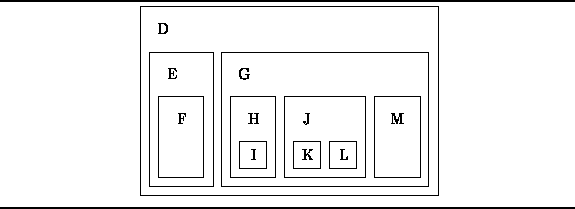

Data Structures and Algorithms
with Object-Oriented Design Patterns in Java
Data Structures and Algorithms
with Object-Oriented Design Patterns in Java
Figure  shows an alternate representation of
the tree
shows an alternate representation of
the tree  defined in Equation .
In this case,
the tree is represented as a set of nested regions in the plane.
In fact, what we have is a Venn diagram
which corresponds to the view that a tree is a set of sets.
defined in Equation .
In this case,
the tree is represented as a set of nested regions in the plane.
In fact, what we have is a Venn diagram
which corresponds to the view that a tree is a set of sets.

Figure: An alternate graphical representation for trees.
This hierarchical, set-within-a-set view of trees is also evoked by considering the nested structure of computer programs. For example, consider the following fragment of Java code:
class D {
class E {
class F {
}
}
class G {
class H {
class I {}
}
class J {
class K {}
class L {}
}
class M {}
}
}
The nesting structure of this program
and the tree given in Equation
are isomorphic . Therefore, it is not surprising that trees have an important
role in the analysis and translation of computer programs.
Therefore, it is not surprising that trees have an important
role in the analysis and translation of computer programs.
 Copyright © 1998 by Bruno R. Preiss, P.Eng. All rights reserved.
Copyright © 1998 by Bruno R. Preiss, P.Eng. All rights reserved.